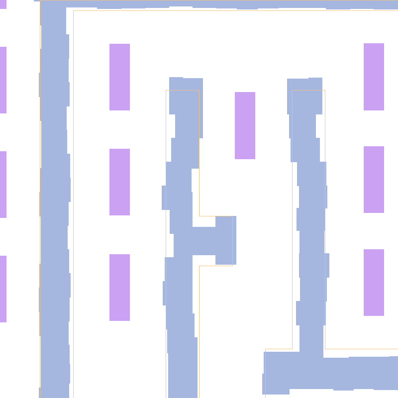
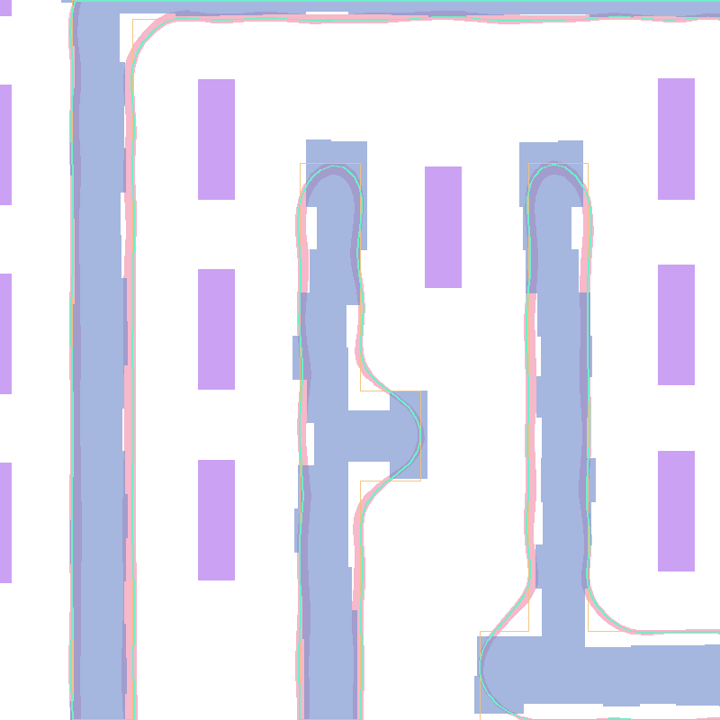
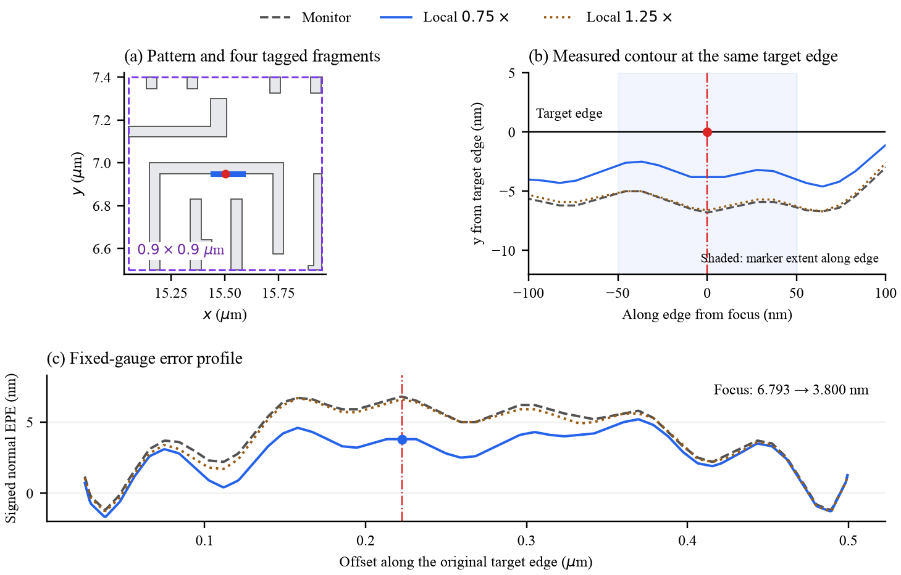

A VIRTUAL PROCESS ENGINEER
Better recipes.
Sharper patterns.
Experience retained.
A frozen language model develops lithography recipes through global search, pattern-guided local correction, and an archive of measured trials.


Poly02 · verified endpoint · actual 600 nm hotspot view
Lower mean window-max EPE
than the strongest baseline
Scoring windows
10 Poly + 10 Metal1
Feasible improvements
of at least 0.1 nm
Retained MRC violations
across all seven methods
01 / FROM A RUN TO THE NEXT DECISION
A trial ends.
Its evidence stays.
Process engineering is more than choosing a number. A useful recipe must move the printed contour, respect manufacturing limits, and address the errors that remain.
VPEvolve keeps the recipe, intervention, physical response, and outcome together. Later proposals retrieve relevant trials and check their claims against that evidence.
INSIDE THE PHYSICAL RESULT
One pattern.
Five layers of evidence.
Look through the target layout, corrected mask, assist features, nominal resist contour, and process variation band. These images come from the same current Poly and Metal trajectories as the results below.
Loading measured geometry…
Watch the printed shape change.
Replay every measured trial ↗The 600 nm close-up stays centered on the original R0 worst gauge at every iteration; the worst remaining error may move elsewhere. “Resist” denotes the simulated nominal contour, not a photograph or intensity map. All layers share the same spatial coordinates.
02 / THE HARNESS
Search the recipe.
Then locate the bottleneck.
Fixed tools and checks connect the actor to physical evidence. Self-evolution happens through accumulated experience and retained recipes; the model weights and harness code stay fixed during a run.
Improve the common recipe first.
Change editable recipe settings such as fragmentation, movement limits, and feedback. Search begins globally, with every candidate checked against the same fixed measurement contract.
Both stages share one evaluation budget. The local stage opens after two consecutive feasible low-gain trials and a persistent hotspot.
03 / WHERE GLOBAL TUNING IS NOT ENOUGH
Find the pattern.
Move the worst edge.
The hotspot coordinate starts the diagnosis. Native pattern matching finds the matching geometry; a marker selects edge fragments, and a scoped rule changes their OPC feedback.
6.793→
One manually authored local rule.
Four tagged edge fragments.

The worst remaining gauge moves.
Relative to the diagnostic monitor.
Repeated geometry and metrics agree.
This is a development mechanism case, separate from the main comparison. The weak-feedback probe exceeds its original, tighter R0-based PVB cap and is recorded as infeasible. It demonstrates a spatial effect, not an accepted main-table improvement.
04 / CURRENT PHYSICAL EVALUATION
Seven methods.
One measurement contract.
Twenty fixed 10 × 10 µm scoring windows, one search seed, and up to four candidates per method and window. Switch layers to see where the gains come from.
26.09% below Textual Memory
| Method | Max EPE ↓nm | Avg. EPE ↓nm | PVB ↓µm* | MRC ↓count | Success% | OPC / LLMtotal calls |
|---|---|---|---|---|---|---|
| Loading the verified results… | ||||||
Max EPE averages the maximum within each window; Avg. EPE averages per-window mean errors. *PVB is band area divided by target-edge length (µm). All quality metrics use the same retained recipe. Success requires a feasible ≥ 0.1 nm maximum-EPE reduction. These windows come from one layout family and have prior development exposure.
What do OPC / LLM counts include?
Total calls in each group, not a ratio. OPC includes candidate evaluations and one endpoint repeat per window. Model calls include rejected proposals. Shared calibration (40 calls), historical experience acquisition, development pilots, and native pattern diagnostics are separate costs. Budget caps are matched; actual use can differ.
05 / DOES EXPERIENCE HELP?
Same starting recipe.
Different access to experience.
Six matched windows isolate access to measured records. Every arm keeps the same authored skills, current state, latest feedback, actor, and quality limits.
With the same initial bank, access to newly accumulated cards lowers mean window-max EPE by 5.18%. Three paired wins, three ties.
The complete and frozen arms use 24 and 20 candidate evaluations under equal caps. All six complete trajectories remain global, so a no-local arm is not reported for this short budget. These single-seed comparisons support experience access; they do not establish long-horizon stability.
07 / TOWARD AN OPEN ENGINEERING RECORD
Layouts, recipes,
and the trials between them.
The planned release contains 50 source clips across Poly and Metal1 from one layout family. The current main study samples 20 scoring windows. Code and the dataset are being prepared for release.
What is established. What comes next.
Completed Main comparison, experience-bank ablations, a local-rule mechanism case, and two extended-budget traces.
Still open Current-harness cross-model and source-reuse studies; sustained autonomous local refinement. Earlier model-replay scores are not substituted for these experiments.